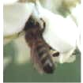

Il miele di acacia è caratterizzato da un elevato contenuto di fruttosio, ed ha un sapore molto dolce e delicato. Ha un colore giallo paglierino molto chiaro e rimane allo stato liquido molto a lungo. La fioritura, in pianura, avviene nel mese di Maggio.La medicina popolare indica questo miele per alleviare l'acidità di stomaco.